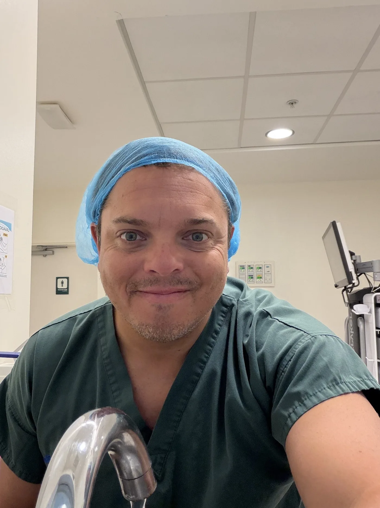

Referente en Cirugía Torácica en Latinoamérica
19 años de experiencia en cirugía oncológica torácica, robótica, broncoscopía intervencionista y trasplante pulmonar. Atención en Clínica Las Condes y Hospital Clínico San Borja Arriarán.
Especialidades
Cirugía Torácica de Vanguardia
Cobertura completa en patología torácica con tecnología de última generación disponible en Chile.
Cirugía Robótica Torácica
Lobectomías, segmentectomías y timectomías con sistema Da Vinci. Máxima precisión, mínima invasión, recuperación acelerada.
Visitar rats.cl → cancerpulmonar.clCáncer Pulmonar
Diagnóstico, estadificación y tratamiento quirúrgico del cáncer pulmonar en todas sus etapas resecables. Guía para pacientes y familias.
Visitar cancerpulmonar.cl → broncoscopia.clBroncoscopía Intervencionista
EBUS, CryoEBUS y técnicas avanzadas de diagnóstico endobronquial. Más de 3.200 procedimientos EBUS desde 2010.
Visitar broncoscopia.cl → videotoracoscopia.clVideotoracoscopía (VATS)
Cirugía torácica mínimamente invasiva para patologías pleurales, pulmonares y mediastínicas sin toracotomía.
Visitar videotoracoscopia.cl → hiperhidrosis.clHiperhidrosis
Simpatectomía torácica por videotoracoscopía. Más de 95% de éxito en el tratamiento definitivo del sudor excesivo de manos y axilas.
Visitar hiperhidrosis.cl →Tecnología de última generación
Acceso a las plataformas más avanzadas disponibles en Chile para cirugía torácica mínimamente invasiva y diagnóstico de precisión.
Pacientes y médicos
Recursos para pacientes y para médicos
Información específica según tu perfil — paciente buscando orientación, o médico que necesita derivar a un especialista.
Para pacientes y familias
Información clara sobre patologías torácicas frecuentes, síntomas, diagnóstico y opciones de tratamiento — sin tecnicismos innecesarios.
Para médicos y referentes
Información técnica sobre procedimientos, indicaciones, plataformas tecnológicas disponibles y criterios de derivación directa.
Sobre mí
Formación y trayectoria
Médico-Cirujano de la Pontificia Universidad Católica de Chile, con especialización en Cirugía General y Torácica por la Universidad de Chile y formación en Trasplante Pulmonar en el Hospital Universitario Puerta de Hierro Majadahonda, Madrid, España.
Con 19 años de experiencia y más de 5.700 cirugías torácicas, es el cirujano con mayor experiencia en EBUS en Chile (desde 2010, +3.200 procedimientos) y en cirugía robótica torácica RATS (desde 2015, +200 cirugías robóticas).
Regente para Chile de la Asociación Mundial de Broncología y Neumología Intervencionista (WABIP). Fellow del American College of Surgeons (FACS) desde 2020. Miembro de IASLC, European Respiratory Society e ISHLT.
Activo en formación médica continua, desarrollo de programas quirúrgicos avanzados e innovación tecnológica en cirugía torácica a nivel latinoamericano.
Dirigió entre 2014 y 2022 el Programa de Perfeccionamiento en Cirugía Toracoscópica para Cirujanos Generales de la Escuela de Postgrado de la Universidad de Chile, e integra el comité académico del programa de subespecialidad en Cirugía de Tórax de la Universidad Finis Terrae. El detalle está en docencia y menciones en medios especializados, y la trayectoria completa —formación, sociedades y congresos fechados— en el currículum académico.
Formación y cargos

Producción científica
Publicaciones científicas
Producción indexada en PubMed/MEDLINE, SciELO, Scopus y LILACS, en trasplante pulmonar, oncología torácica, cirugía mínimamente invasiva, broncoscopía intervencional y patología pleural.
Incluye la primera experiencia de trasplante pulmonar ex vivo en Chile y Latinoamérica (Rev Med Chile 2021) y las recomendaciones de broncoscopía en COVID-19 de la Sociedad Chilena de Enfermedades Respiratorias.
Además de la producción indexada, está el registro de docencia universitaria y menciones en Clínica Las Condes desde 2014.
También están reunidos en un solo lugar los canales de contacto y perfiles profesionales del Dr. David Lazo Pérez: reserva de hora, telemedicina, ORCID y redes.
FAQ
Preguntas frecuentes sobre la atención
¿Dónde atiende el Dr. David Lazo Pérez?
Atiende en Clínica Las Condes (sistema privado) y en el Hospital Clínico San Borja Arriarán (sistema público), donde integra la Unidad de Cirugía Torácica y Broncoscopía Intervencional. También realiza consultas por telemedicina para todo Chile.
¿Qué formación tiene?
Médico-Cirujano de la Pontificia Universidad Católica de Chile, con especialización en Cirugía General y Torácica por la Universidad de Chile y formación en trasplante pulmonar en el Hospital Universitario Puerta de Hierro Majadahonda (Madrid, España).
¿A qué sociedades pertenece?
Es Regente para Chile de la Asociación Mundial de Broncología y Neumología Intervencionista (WABIP), Fellow del American College of Surgeons (FACS) desde 2020, y miembro de la International Association for the Study of Lung Cancer (IASLC) desde 2014, la European Respiratory Society (ERS) desde 2015 y la International Society for Heart and Lung Transplantation (ISHLT) desde 2020.
¿Cómo agendo una consulta?
Para atención presencial en Clínica Las Condes puede reservar hora a través del sistema de agenda de la clínica. Para consulta por telemedicina, a través de la plataforma de agendamiento en línea. Ambos enlaces están disponibles en la sección de contacto de este sitio.
¿Necesito derivación de otro médico?
No es indispensable, pero es útil llegar con los exámenes disponibles —imágenes (TC de tórax), informes previos y biopsias si las hay—. Eso permite orientar la evaluación desde la primera consulta y evitar repetir estudios.
¿Atiende pacientes derivados por otros médicos?
Sí. Recibe derivaciones de neumólogos, oncólogos, cirujanos generales y médicos internistas, tanto para evaluación quirúrgica como para procedimientos de broncoscopía intervencional y diagnóstico endobronquial.
Primer paso